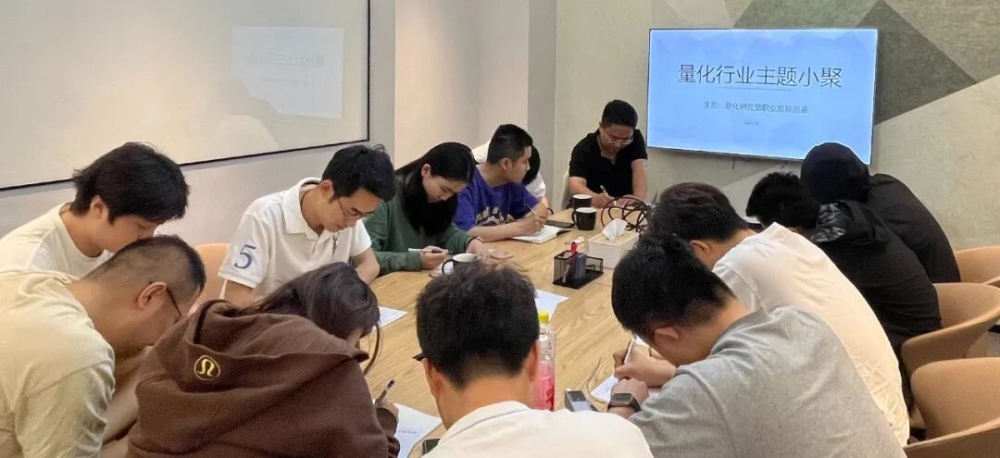

主题回顾
本次主题：量化研究员职业发展图鉴
主题背景：根据中国量化白皮书调查显示，行业内普遍认为做好 Quant 的关键素质先后顺序分别是：扎实的专业技能、聪明、快速领悟、对世界的认知、勤奋努力。聪明有助于单次研究的胜率，而努力则决定长期的水平。当下行业人均学历卷的不能再卷的情况下，还有什么因素推动了一个 Quant 从优秀走向卓越？
交流话题：1.从业者分享自己的职业生涯，如工作内容、职业发展等？2.国内私募机器因子挖掘的现状以及国内量化私募求职市场的现状？3.限制日内反向交易后，日内底仓T0还会有做的空间吗？4.因子挖掘算法的应用以及指数增强的alpha都有哪些方面？5.高频股指期货模型经验分享？
小聚成员
本次活动根据大家填写的报名表，依照“深度交流+多元讨论”的主旨，一共邀请15位小伙伴参与，从事量化行业全职工作的伙伴8位，目前在量化行业实习的伙伴7位，值得一提的是，参与本次小聚的全职和实习伙伴所在公司多为知名百亿私募、头部券商、自营机构。

活动反馈
很有收获的一次讨论，了解到许多和Model相关、因子相关以及职业发展相关有价值的内容，期待下次有机会再一起交流。——某私募实习小白
今天石同学和齐同学关于机器挖掘因子的讨论对我很有启发！还有王同学分享了一些关于模型训练的问题！感谢高同学举办这次活动让大家有一个交流的平台！——量化从业者
今天听到了很多关于模型的idea，收获很大。本质还是因为金融数据信噪比太低，如何更好地去除噪音成为了一个值得深挖的课题。同时，在因子上很多朋友也分享了很多有意思的想法，如何更好的提取信息供模型来学，或者是挖到更新的有marginal的因子，都有很多可以尝试的方向。感谢超级量化的这次活动！——某百亿量化研究员
今天石老师和陈总的发言对我最有启发。关于如何处理数据中的噪音，石老师的发言提出了一种很有意思的想法，同时陈总作为主观私募从业者，对行业中一些机会的理解也让人印象深刻。——某量化小白
今天听到了很多有趣的量化经历，对因子挖掘的流程有一个更新的认知角度，如何做一名更严谨的Quant，在不同市场环境下如何调整交易者/打工者的心态。——某量化小白
今天Q老师的发言让我收获非常大，分享了很多因子挖掘的细节与经验。——某QR
每次来都收获很大，接触了量化是怎么做模型的，如何考虑问题。对我们做事件驱动策略主观选股帮助很大！希望越办越好！——岳鑫遥私募 陈策
今日收获：今天S老师的发言对我很有启发，关于截面选股，如何选取准确的y值来做label，更有效的预测。——Robert
今天S老师的发言使我受益很多，关于多因子的挖掘，还有Z老师的发言关于预测的很多疑问都有收获，更重要对于行业有了更深的理解。——某QR
今天收获了一些大佬的对市场的理解，以及主观策略如何运作及如何设计的，获益匪浅。——某量化新手一枚
今天S老师对我的交易有所启发，陈总让我对整个A股的行情及操作有所了解，和大家学习到了很多！——某私募实习生
今天听到了CTA相关策略的开发流程让我受益匪浅！——某私募QR
今天的量化小聚的收获有：1.可通过比散户提前几毫秒知道价格赚“稳赚”的钱（拼设备）。2.个人机器学习等方面知识比较欠缺。3.因子最好有逻辑。——某量化新人
今天的小聚让我更深刻的认识了量化私募目前所处的市场环境，还有各家研究员与基金经理面对新规后的心态改变，更重要的是见到了很多志同道合的朋友，希望之后再多多交流！——量化从业者

大家的收获札记